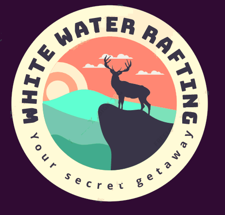

Overview
Purpose
The objective of this website is to allow our patrons, along with our newly, inquiring, and prospective customers to be able to access our information and resources center to better aid them in their decision-making process when booking our tours and packages. This will alleviate the need for our customers to book through third-party agencies and entities alike—at a more costly rate, hence giving them access to a better deal for their money; which will in turn boost the company’s revenue and overall customer satisfaction.
Here at WWR, we want all our customers to be satisfied ultimately. Allowing our customers to access our website directly, gives us a chance to build and improve our customers' relationships by building trust and giving them the ability to leave feedback as we seek ways to improve their overall experiences. We also aim to encourage customers to share their positive experiences, through testimonials on our website, where their comments can be highlighted; showing their thoughts and experience.
Our platform will allow customers to easily navigate our website showcasing scenic imagery of some of the various tours and excursions that are offered as part of our packages, which include our breathtaking rainforest waterfalls and parks listed amongst our famous white water rafting activities that keep our patrons returning!
Audience
The targeted audience based on marketing research is the entire family. While, there’s an age limit for most of our team park activities and water sports, we have designed our park for the entire family targeting audience as young as five (5) years old, the kiddie’s lounge offers a safe and fun environment for kids play and enjoy that is in the care of our team members that offers constant supervision and support these minors that also offers free swimming lessons, etc. Our nursery is designed for children under five (5), who's parents might want with our nanny care services to take care of their infants, while they relax and enjoy our breathtaking senaries and indulge themselves getaway excursions and sporting packages. We also offer rides to young teens which can be interchange with the adults rides and actives.
Branding
Website Logo
Style Guide
Color Palette
Palette URL:
https://coolors.co/20033A-fffbd7-446284-3E8585-41ab8d| Primary | Secondary | Accent 1 | Accent 2 |
|---|---|---|---|
| #446284 | #20033A | #3E8585 | #FFFBD7 |
Typography
Heading Font: Flamenco
Paragraph Font: Noto Sans
Normal paragraph example
The best Whitewater Rafting in Colorado, White Water Rafting Company offers rafting on the Colorado and Roaring Fork Rivers in Glenwood Springs. Since 1974, we have been family owned and operated, rafting the Shoshone section of Glenwood Canyon and beyond.
Colored paragraph example
Trips vary from mild and great for families, to trips exclusively for physically fit and experienced rafters. No matter what type of river adventures you are seeking, White Water Rafting Company can make it happen for you.
Navigation
Site Map
Wireframes
Home